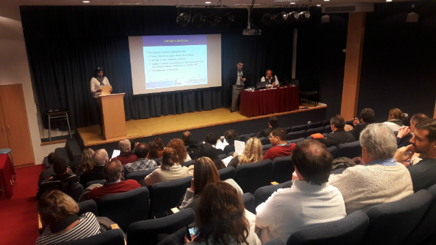
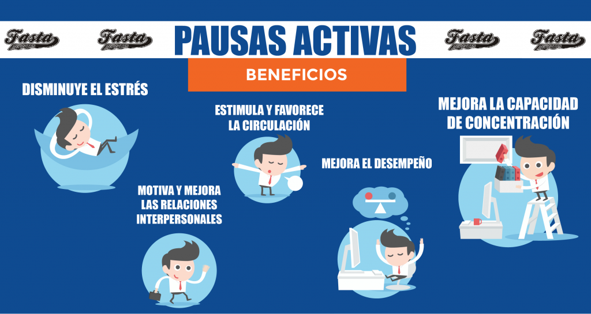

Se realizó el 4° Taller Regional de Formulación de Proyectos de Desarrollo Tecnológico Social (PDTS)
El pasado 2 de Junio se realizó en el Auditorio de la Universidad FASTA el Taller Regional de Formulación de Proyectos de Desarrollo Tecnológico Social (PDTS).
El encuentro, organizado localmente por la Secretaría de Investigación de la Universidad FASTA dentro del Programa de Fomento de la Investigación y en conjunto con el Ministerio de Ciencia, Tecnología e Innovación Productiva de la Nación (MinCyT) y el Consejo Federal de Decanos de Ingeniería (CONFEDI), previó la presentación del sistema de acreditación de Proyectos de Desarrollo Tecnológico Social del Ministerio de Ciencia, Tecnología e Innovación Productiva y una actividad práctica tendiente a facilitar la tarea de identificación y formulación de PDTS.
Nuevas propuestas en el Centro de Capacitación de la Universidad FASTA
El 21 y 22 de junio, Diego Pablo Martin del Grupo Asegurador La Segunda, Esteban Bastanzo, Director de BBNforum y Wanda Dueñas por BBNforum visitarán la Universidad para recibir una capacitación intensiva en la plataforma del CECAUF (Centro de Capacitación de la Universidad FASTA) . Finalizada la capacitación se dispondrán a realizar una correcta tutoría de los alumnos.
Por otro lado, se informa que la Diplomatura en Administración y Gestión del Seguro, a cargo del Grupo Asegurador La Segunda comenzará a ser comercializada por el CECAUF a todo el país.
Las temáticas a desarrollar son: Aspectos Técnicos del Seguro; Derecho y Legislación en la actividad aseguradora; La Venta Consultiva en Seguros; La Negociación en Seguros; Gestión de Empresas de Seguros; Marketing de Seguros ; Fidelización Coaching & Liderazgo; Taller Integrador.
Pausas Activas
El Jueves 29 de junio el Gabinete de Consultoría Nutricional y FASTA Deportes invita a los alumnos a participar de la Pausa Activa a realizarse en el aula 3 del Edificio San Alberto Magno (Avellaneda 3341) a las 14.30 hs.
Ese mismo día los alumnos podrán encontrar en el buffet colaciones saludables como budines de frutas y barritas de cereal caseras.
Las Pausas Activas son una forma de promover hábitos de vida saludable a través de espacios breves de actividad física.
En el entorno universitario, la gran mayoría de trabajadores y estudiantes permanecen gran cantidad de horas del día sentados, probablemente en posiciones poco saludables y con un nivel de estrés no recomendable para períodos prolongados de tiempo, disminuyendo la capacidad de concentración y generando dolores que afectarán negativamente la tarea. Esto favorece a que las personas se desacondicionen física, psicológica y emocionalmente, lo cual promueve una actitud sedentaria y de malestar relacionada directamente con cambios metabólicos y estructurales en el cuerpo humano.
El entorno universitario representa un escenario ideal para la promoción de hábitos saludables. Las pausas activas tienen como objetivos recuperar energías para lograr un mejor desempeño, disminuir el estrés, mejor las relaciones interpersonales y la integración social, lograr una postura saludable en el estudio o el trabajo, favorecer la circulación, entre otros.
Breves períodos de actividad física a través de ejercicios compensatorios de las tareas realizadas revertirán la fatiga muscular y el cansancio, generando un sentimiento de bienestar y un clima distendido antes y después de las pausas.